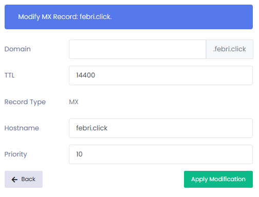
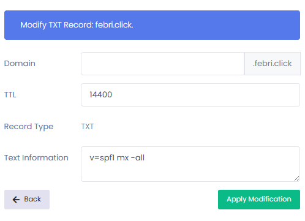

<!DOCTYPE html>
<html lang="en"><head><meta http-equiv="Content-Type" content="text/html; charset=UTF-8">
  
  <meta http-equiv="X-UA-Compatible" content="IE=edge">
  <meta name="viewport" content="width=device-width, initial-scale=1"><!-- Begin Jekyll SEO tag v2.4.0 -->
<title>febri's blog</title>

<!-- End Jekyll SEO tag -->
<link rel="stylesheet" href="../main.css"><link type="application/atom+xml" rel="alternate" href="" title="">
<link rel="stylesheet" href="https://cdnjs.cloudflare.com/ajax/libs/font-awesome/5.12.1/css/all.min.css" />
<link rel="stylesheet" href="https://cdnjs.cloudflare.com/ajax/libs/font-awesome/6.6.0/css/brands.min.css"/>
<link rel="stylesheet" href="https://cdnjs.cloudflare.com/ajax/libs/font-awesome/6.6.0/css/all.min.css"/>
<link rel="stylesheet" href="https://cdnjs.cloudflare.com/ajax/libs/font-awesome/6.6.0/css/fontawesome.min.css"/>
<link rel="icon" type="image/x-icon" href="../../img/star.ico">
<link rel="preconnect" href="https://fonts.googleapis.com">
<link rel="preconnect" href="https://fonts.gstatic.com" crossorigin>
<link href="https://fonts.googleapis.com/css2?family=Libre+Caslon+Text:ital,wght@0,400;0,700;1,400&display=swap" rel="stylesheet">
<link rel="preconnect" href="https://fonts.googleapis.com">
<link rel="preconnect" href="https://fonts.gstatic.com" crossorigin>
<link href="https://fonts.googleapis.com/css2?family=Pirata+One&display=swap" rel="stylesheet">
<link rel="preconnect" href="https://fonts.googleapis.com">
<link rel="preconnect" href="https://fonts.gstatic.com" crossorigin>
<link href="https://fonts.googleapis.com/css2?family=Mrs+Saint+Delafield&display=swap" rel="stylesheet">
</head>
<style>
@font-face {
  font-family: 'Sinaloa Regular';
  src: url('sinaloa-regular.ttf') format('truetype');
}
h1.hack{
    text-transform: uppercase;


  font-size:46px;
  font-family: "Pirata One", system-ui;
  font-weight: 400;
  font-style: normal;
}
.footer{
    position: relative;
    bottom: 0;
    left: 0;
    width: 100%;
    background: #ffffff;
    text-align: center;
    color: #3d3d3d;
}

.icons{
    padding-top: 1rem;
}

.icons a{
    text-decoration: none;
    font-size: 2rem;
    margin: 0.2rem;
    color: #3d3d3d;
}
.icons a:hover{
   color: #84817a;
}
.company-name{
    font-size: 1.6rem;
    margin-top: 0.5rem;
}

@media (max-width: 500px){
    html{
        font-size: 50%;
    }
}    

@media(min-width: 501px) and (max-width: 768px){
    html{
    font-size: 50%;
    }
}    
.tulisan p{
        font-size: 1rem;
}
.tanda_tangan {
  flex-shrink: 0; /* Prevent Chrome, Opera, and Safari from letting these items shrink to smaller than their content's default minimum size. */
  padding: 30px;
}
.tanda_tangan p {
  position: relative;
  text-align: center;
  font: 28.5px/2.70em 'Sinaloa Regular';
  font-weight: 0;
  -webkit-font-smoothing: initial;
/*  letter-spacing: -0.100em;*/
  line-height: 0.9;
  text-transform: uppercase;
  z-index: 1000;
  margin: 0 auto;
  display: block;
  bottom: -5px;
color:black;
}
</style>
<body><header class="site-header" role="banner">

  <div class="wrapper"><a class="site-title" rel="author" href="">fnlqxz</a><nav class="site-nav">
        <input type="checkbox" id="nav-trigger" class="nav-trigger">
        <label for="nav-trigger">
           <span class="menu-icon">
            <p><i class="fa-solid fa-jedi"></i></p>
          </span>
        </label>

      </nav></div>
</header>
<main class="page-content" aria-label="Content">
      <div class="wrapper">
        <article class="post h-entry" itemscope="" itemtype="http://schema.org/BlogPosting">

  <header class="post-header">
    <h1 class="post-title p-name hack" itemprop="name headline">OpenSMTPD FreeBSD</h1>
  </header>

  <div class="post-content e-content" itemprop="articleBody">
<h3>Konfigurasi</h3>
    <p>Caranya cukup gampang, setting record DNS dulu kek gini di settingan domain penyedia provider lo :</p>
    <p></p>
<p></p>
<p>Install opensmtpd freebsd :</p>
<p><pre>pkg install opensmtpd</pre></p>
<p>Install ssl certificate buat domain :</p>
<p><pre>certbot --apache -d domain.tls</pre></p>
<p>Edit file konfig smtpd di <code>/usr/local/etc/mail/</code></p>
<p><pre>nano /usr/local/etc/mail/smtpd.conf</pre>
<p>Isinya kek gini :</p>
<p><pre>
#       $OpenBSD: smtpd.conf,v 1.10 2018/05/24 11:40:17 gilles Exp $

# This is the smtpd server system-wide configuration file.
# See smtpd.conf(5) for more information.

table aliases file:/etc/mail/aliases
table domains file:/etc/mail/domains

# bagian ini khusus SSL
pki febri.click key "/usr/local/etc/letsencrypt/live/febri.click/privkey.pem"
pki febri.click cert "/usr/local/etc/letsencrypt/live/febri.click/fullchain.pem"

# ini sudah masuk bagian kredential akun. jadi harus login dulu baru bisa kirim email.
# kalau kamu ngalamin ndak bisa login, meskipun username dan password sudah bener, bisa jadi bagian ini ada yang salah
listen on vtnet0 tls pki febri.click auth-optional
listen on vtnet0 smtps pki febri.click auth
listen on vtnet0 port submission tls-require pki febri.click auth

action "local" maildir alias <aliases>
action "relay" relay helo febri.click

match from local for local action "local"
match from any for domain <domains> action "local"
match from any auth for any action "relay"

action "local_maildir" maildir "/home/admin/Maildir/"
match for local action "local_maildir"
</pre></p>
<p>Abis itu di save</p>
<p>Ketik <code>sysrc smtpd_enable="YES"</code></p>
<p>Ketik <code>service smtpd start</code></p>
<p>Selesai</p>

<h3>Testing mail server</h3>
<p>Bikin user <code>nologin</code> buat e-mail :</p>
<p><pre>
pw useradd nama_user -s /usr/sbin/nologin -m
</pre></p>
<p>Misal nama usernya <code>admin</code>
<p>Bikin folder <code>Maildir</code> buat inbox :</p>
<p><pre>
mkdir -p /home/admin/Maildir
mkdir -p /home/admin/Maildir/{new,cur,tmp}
chown -R admin:admin /home/admin/Maildir
chmod -R 700 /home/admin/Maildir
</pre></p>
<p>Send test mail akun e-email buat <code>AUTH PLAIN</code> pake user yang udah di bikin :</p>
<p><pre>printf '\0user\0pass' | base64</pre></p>
<p>Testing pake :</p>
<p><pre>openssl s_client -host mail.example.com -port 587 -starttls smtp</pre></p>
<p><pre>
EHLO febri
250-febri.click Hello febri [103.74.5.26], pleased to meet you
250-8BITMIME
250-ENHANCEDSTATUSCODES
250-SIZE 36700160
250-DSN
250-AUTH PLAIN LOGIN
250 HELP
AUTH PLAIN (base64)
235 2.0.0 Authentication succeeded
MAIL FROM: <admin@febri.click>
250 2.0.0 Ok
rcpt to: <febri@pantero.id>
250 2.1.5 Destination address valid: Recipient ok
DATA
354 Enter mail, end with "." on a line by itself
From: Febriyanto Nugroho <admin@febri.click>
To: Febriyanto Nugroho <febri@pantero.id>
Subject: Meeting Reminder
Date: Sun, 02 Mar 2025 12:00:00 +0000
Message-ID: <1234567890@febri.click>
MIME-Version: 1.0
Content-Type: text/plain; charset="UTF-8"
Content-Transfer-Encoding: 7bit

Hello Febri,

This is a reminder for your vacation for Monday at 10 AM.

Best regards,
Febriyanto Nugroho
.
250 2.0.0 c0913d0e Message accepted for delivery

</pre></p>
<p>Kalo berhasil ada pesan <code>250 2.0.0 c0913d0e Message accepted for delivery</code></p>
<p>Keren ga cok?</p>
    </div>

  </div>

   <footer class="footer">
        <div class="icons">
           <a href="https://facebook.com/fnlqxz"><i class="fab fa-facebook"></i></a>
           <a href="https://www.linkedin.com/in/febriyanto-nugroho/"><i class="fab fa-linkedin"></i></a>
           <a href="https://instagram.com/fnlqxz"><i class="fab fa-instagram"></i></a>
           <a href="https://github.com/febnug"><i class="fab fa-github"></i></a>
<a href="https://stackoverflow.com/users/3649174/febriyanto-nugroho?tab=profile"><i class="fab fa-stack-overflow"></i></a>
<a href="https://twitter.com"><i class="fab fa-twitter"></i></a>
            <p class="tulisan">
                &copy; 2015 - now
            </p>
<div class="tanda_tangan">
<p>febriyanto</p> 
<p>nugroho</p>
</div>
        </div>
    </footer>


</body></html>

